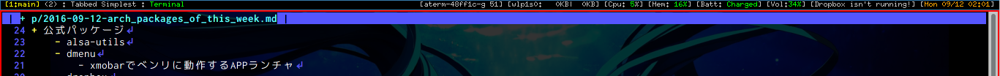

今週Archに入れたパッケージ
今週以外のも含まれてるかも。
今週はxmonad, xmobar日和です。

- 公式パッケージ
- alsa-utils
- dmenu
- xmobarでベンリに動作するAPPランチャ
- dropbox
- dropboxとHDDのフォルダを同期するやつ
- nitrogen
- xmonad使ってる時に.xinitrcでwallpaper設定するやつ
- openssh
- pm-utils
- ハイバーネートできるやつ
- rxvt-unicode
- urxvtという軽量なターミナル
- vlc
- いい感じのGUIメディア再生するやつ
- mplayer
- いい感じのGUIメディア再生するやつ その2
- Vimプラグインとかが依存してたりする
- wget
- 基本
- xdotool
- xmonadのキーマッピングにより、ImageMagickでアクティブウィンドウのScreenShotを取れるようにするために使った
- xmobar
- xmonadの相棒
- 上記画像のそれっぽいあれ ([1:main] … とか表示されてるとこ)
- xmonad
- タイル型ウィンドウマネージャ
- 環境構築がプログラマブルであり、最強
- 何よりもHaskellで設定ファイルを弄れる
- xmonad-contrib
- xmonad設定ファイル(
~/.xmonad/xmonad.hs)でimportできるHaskellのモジュールを増やす
- xmonad設定ファイル(
- xorg-xprop
- xmonadの設定でたまに必要になるアプリのclassNameというものをxpropコマンドで取得できる
- xsel
- コマンドラインからOSのクリップボードへアクセスできる
- AUR
- dropbox-cli
- dropboxコマンドの状態を確認したり色々できる
- xmobarにdropboxの同期状態を表示する時に使った
- gvfs
- xfce4でゴミ箱を使えるようになったりする
- xfce4でUSBのマウントをデスクトップからできるようになったりする
- steam
- まだ環境構築できてない
- libGL error: failed to load driver: i965
- libGL error: unable to load driver: swrast_dri.so
- libGL error: failed to load driver: swrast
- swift-bin
- Swiftの実行環境
- 某大学の研究のお手伝いでSwiftを触ることがあったので入れた
- unzip-iconv
-Oオプションがあるパッチバージョンのunzip-O cp932ってやると、zip内の日本語ファイルが文字化けない
- uswsusp
- ハイバーネートにつかう
- xmonad-extras-darcs
- xmonad設定ファイルでimportできるHaskellのモジュールをもっと増やす
- dropbox-cli
ここからなんとはない日記
以下の内容は多分僕以外にとってなんら興味のあるものではないだろうて思う。
うつ病改善に良いと言う Three Good Things というのをやってみる。
寝る前に、今日の良かったことを3つ上げるというもの。
Twitterでは#3goodタグがあったような？
- お母さんといっぱい話とかいっぱいできた
- はいふりを見れた
- 美味しいラーメン屋さんに行けた
- 残しちゃってごめんね…頼みすぎた…
- お母さんと行った
よし。
この記事はこちらから修正リクエストを送ることができます。
今週Archに入れたパッケージ - github
ゴミ箱ボタンの左にある、鉛筆ボタンを押してね！